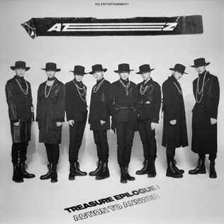
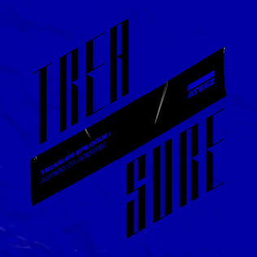

Treasure EP. Fin
Released October 2019
Members:
- Kim Honhjoong & Park Seonghwa
- Jeong Yunho & Kang Yeosang
- Choi San & Song Mingi
- Jung Wooyoung & Choi Jongho
Treasure EP.Fin: All to Action is the first studio album by South Korean boy band Ateez. It was released through KQ Entertainment on October 8, 2019, alongside the single "Wonderland" and its music video. It also serves as the final part of the Treasure series.


Song Titles
- Answer
- Horizon
- Star 1117
- Precious
- Outro: Long
- Commercially, the album debuted atop the Gaon Album Chart, becoming Ateez's second number-one album in South Korea.
- ATEEZ returned in early January with their mini album, Treasure Epilogue: Action to Answer. This album brings the Treasure series to an end, which also features 3 mini-albums as well as a full length album.
- Kim Hongjoong, producer
- It topped the Gaon Monthly Chart for the month of January, selling 128,273 copies. It also debuted at number five on the Billboard World Albums Chart